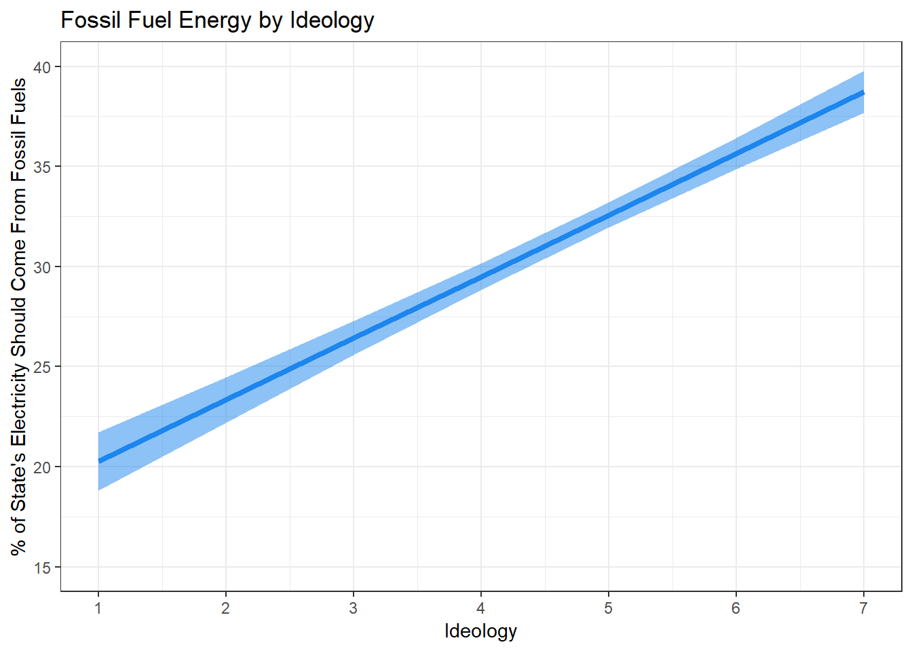

9 Multivariable Linear Regression
This lab covers the basics of multivariable linear regression. We begin by reviewing linear algebra to perform ordinary least squares (OLS) regression in matrix form. Then we cover an introduction to multiple linear regression and visualizations with R. The following packages are required for this lab:
- tidyverse
- psych
- car
- stargazer
- reshape2
- broom
- skimr
9.1 Part I: Calculating Least-Squared Estimates
The previous lab introduced the estimated bivariate linear regression model as follows:
\[\hat{y}=\hat{\alpha}+\hat{\beta} x\]
Where \(\hat{\alpha}\) and \(\hat{\beta}\) are solved via the following formulas:
\[\hat{\alpha}=\bar{y} - \hat{\beta}\bar{x}\]
\[\hat{\beta}=\frac{cov(x,y)}{var(x)}\]
In this lab we use matrix algebra to calculate the least-squared estimates. This proves useful for multivariable linear regression models where the methods introduced for bivariate regression models become more complex and computationally cumbersome to express as equations.
9.1.1 Matrix Algebra
For multivariable regression analysis, the formulas for calculating coefficients are more easily found using matrix algebra. In this section we cover the basics of matrix algebra relevant to calculating the coefficients for an estimated linear regression model. A matrix is a rectangular array of numbers organized in rows and columns and each number within a matrix is an element. A matrix is defined as consisting of m rows and n columns. Note: If m = n, the matrix is referred to as a square matrix.
The following is a general form of a matrix:
\[x_{m\times n} = \begin{bmatrix} x_{11} & \dots & x_{1n} \\ \vdots & \ddots & \vdots \\ x_{m1} & \dots & x_{mn} \end{bmatrix}\]
There are a number of operations in matrix algebra; however, this review focuses on those pertinent to solutions of the least-squared equations in multiple regression:
9.1.1.1 Transpose of a matrix
The transpose of a matrix A, denoted as A’, is obtained by interchanging the rows and columns of the A matrix:
\[A = \begin{bmatrix} 1 & 2 & 4 \\ 5 & 7 & 6 \end{bmatrix}, A' = \begin{bmatrix} 1 & 5 \\ 2 & 7 \\ 4 & 5 \end{bmatrix}\]
Note: The product of a matrix and its transpose is a square matrix.
The matrix() function in R will create a matrix object consisting of provided values in a defined number of rows and columns. The above matrix, A, is created as follows:
A <- matrix(c(1, 2, 4, 5, 7, 6), 2, 3)
A## [,1] [,2] [,3]
## [1,] 1 4 7
## [2,] 2 5 6Further, the t() function will transpose a given matrix:
Aprime <- t(A)
Aprime## [,1] [,2]
## [1,] 1 2
## [2,] 4 5
## [3,] 7 69.1.1.2 Row-column multiplication
Matrix multiplication is done by summing the products of the row elements in the first matrix by the column elements in the second matrix in corresponding position. This is shown in the following example:
\[A = \begin{bmatrix} 1 & 2 & 4 \\ 5 & 7 & 6 \end{bmatrix} \times A' = \begin{bmatrix} 1 & 5 \\ 2 & 7 \\ 4 & 5 \end{bmatrix} = \begin{bmatrix} 1*1+2*2+4*4 & 1*5+2*7+4*6 \\ 5*1+7*2+6*4 & 5*5+7*7+6*6 \end{bmatrix} = \begin{bmatrix} 21 & 43 \\ 43 & 110 \end{bmatrix}\]
Similarly, the product of matrices can be calculated in R using the %*% operator:
AxAprime <- A %*% Aprime
AxAprime## [,1] [,2]
## [1,] 66 64
## [2,] 64 65Note: Not all matrices can be multiplied. The number of columns in the first matrix must equal the number of columns in the second matrix. Further, unlike ordinary algebra multiplication, matrix multiplication is NOT commutative (order of operands matter). In the previous example we were able to find the product of A and A’, because the number of columns in A (3) is equal to the number of rows in A’ (3). Suppose we wanted the product of A’ and B, where B is defined as the following matrix:
\[B = \begin{bmatrix} 1 & 2 & 3\\ 2 & 6 & 4 \\ 4 & 5 & 6 \end{bmatrix}\]
We are unable to find the product of AB because the number of columns in A’ (2) does not equal the number of rows in B (3). We are able to find the product of BA’ as follows:
\[ A' \times B = \begin{bmatrix} 1 & 2 & 4 \\ 5 & 7 & 6 \end{bmatrix} \times \begin{bmatrix} 1 & 2 & 3\\ 2 & 6 & 4 \\ 4 & 5 & 6 \end{bmatrix} = \begin{bmatrix} 21 & 34 & 35 \\ 42 & 82 & 79 \end{bmatrix}\]
Or, in R:
B <- matrix(c(1, 2, 3, 2, 6, 4, 4, 5, 6), 2, 3)## Warning in matrix(c(1, 2, 3, 2, 6, 4, 4, 5, 6), 2, 3): data length [9] is
## not a sub-multiple or multiple of the number of rows [2]BxAprime <- B %*% Aprime
BxAprime## [,1] [,2]
## [1,] 55 53
## [2,] 38 38In ordinary algebra, 1 is the identity element, whereby any number multiplied by 1 returns that number:
\[ 5 \times 1 = 5\]
Similarly, there exists an identity element in matrix algebra, denoted by the symbol I. The identity matrix is a square matrix with a 1 in the same pattern, regardless of size:
\[I_{1\times1}=\begin{bmatrix} 1 \end{bmatrix}, I_{2\times2}=\begin{bmatrix}1 & 0 \\ 0 & 1\end{bmatrix}, I_{3\times3} = \begin{bmatrix} 1 & 0 & 0 \\ 0 & 1 & 0 \\ 0 & 0 & 1 \end{bmatrix}\]
The following demonstrates the identity property for matrices:
I <- matrix(c(1, 0, 0, 0, 1, 0, 0, 0, 1),3, 3)
AI <- A %*% I
AI## [,1] [,2] [,3]
## [1,] 1 4 7
## [2,] 2 5 6A## [,1] [,2] [,3]
## [1,] 1 4 7
## [2,] 2 5 6Lastly, the reciprocal of A is known as the inverse matrix, denoted as \(A^{-1}\). In ordinary algebra, the product of a number and its reciprocal is 1. In matrix algebra, the product of a matrix and its inverse is the identity matrix. \(AA^{-1}=A^{-1}A=I\) Note: Inverse matrices only exist for square matrices, and not all square matrices possess inverses. The inverse of a matrix can be found via the solve() function as follows:
A.inv <- solve(AxAprime)
A.inv## [,1] [,2]
## [1,] 0.3350515 -0.3298969
## [2,] -0.3298969 0.3402062The following R example demonstrates I as the product of \(AA^{-1}\):
Aident <- A.inv %*% A
Aident## [,1] [,2] [,3]
## [1,] -0.3247423 -0.3092784 0.3659794
## [2,] 0.3505155 0.3814433 -0.26804129.1.2 Representing System of Linear Equations as Matrices
The previous lab introduced the estimated bivariate linear regression model as follows:
\[\hat{y_i}=\hat{\alpha}+\hat{\beta} x_i\]
Where \(\hat{\alpha}\) anf \(\hat{\beta}\) could be solved via the following formulas:
\[\hat{\alpha}=\bar{y} - \hat{\beta}\bar{x}\]
\[\hat{\beta}=\frac{cov(x,y)}{var(x)}\]
In this lab we demonstrate how to use matrix algebra to calculate the least-squared estimates. For bivariate linear regression, the above formulas and matrix algebra will produce the same result; however, for multivariable linear regression the underlying methods that develop the above formulas become computationally complex such that matrix algebra is the preferred method to calculate the coefficients.
Using bivariate regression we explored hypotheses related to how preference for renewable energy is a function of ideology. Sometimes the dependent variable (y) is not easily explainable via a single independent variable (x), but rather multiple independent variables (\(x_0, x_1, ..., x_n\)). We can modify the bivariate regression model to append the additional variables of interest, as follows:
Note: The \(\alpha\) intercept coefficient is replaced with \(\beta_0\).
\[y_i=\beta_0+\sum^n_{j=1}{\beta_j x_{ij}}+\varepsilon_i\]
Where, n is the number of independent variables, \(\beta_0\) is the regression intercept, and \(\beta_j\) is the slope for the \(j^{th}\) variable. The above model is the general form of a regression model, and as such, will work for bivariate and multivariable models. If \(n=1\), the model is exactly the same as the model stated in the textbook and previous lab.
Using this model we can imagine collected data as a system of linear equations. To demonstrate, suppose we collected the following data:
ex.ds <- data.frame(x = c(1, 2, 3, 4, 5),
y = c(1, 1, 2, 2, 4))
ex.ds## x y
## 1 1 1
## 2 2 1
## 3 3 2
## 4 4 2
## 5 5 4Using the linear regression model above, we can state the data as a system of linear equations:
\[1 = \beta_0 + \beta_1 * 1\]
\[1 = \beta_0 + \beta_1 * 2\]
\[2 = \beta_0 + \beta_1 * 3\]
\[2 = \beta_0 + \beta_1 * 4\]
\[4 = \beta_0 + \beta_1 * 5\]
Given we are working with two variables, x and y, our n is 1, so we are working with the bivariate linear regression model. Now, we can use ordinary algebra to solve for \(\beta_0\) and \(\beta_1\). To do so, we will solve for one variable, then solve for the other. Given our system consists of 5 linear equations, the ordinary algebra approach is not practical.
This is where matrix algebra is useful. The general regression model can be expressed in the following matrix form, where we capitalize variables to represent matrices:
\[Y=X\beta_1+\varepsilon\]
The system of linear equations can be converted into the following matrices:
\[Y = \begin{bmatrix}1 \\ 1 \\ 2 \\ 2 \\ 4\end{bmatrix}, X = \begin{bmatrix}1 & 1 \\ 1 & 2 \\ 1 & 3 \\ 1 & 4 \\ 1 & 5\end{bmatrix}, and \beta = \begin{bmatrix}\beta_0 \\ \beta_1\end{bmatrix}\]
Note: The first column of the X matrix is always 1.
9.1.3 OLS Regression and Matrices
With data expressed in matrix form, we then use matrix algebra to calculate the least-squared estimates. The least-squared estimates formula is:
\[\hat{\beta}=(X'X)^{-1}X'Y\]
Using the matrices formed from the system of linear equations, we demonstrate calculating the least-squared estimates using R:
Y <- matrix(c(1, 1, 2, 2, 4), 5, 1)
Y## [,1]
## [1,] 1
## [2,] 1
## [3,] 2
## [4,] 2
## [5,] 4X <- matrix(c(1, 1, 1, 1, 1, 1, 2, 3, 4, 5), 5, 2)
X## [,1] [,2]
## [1,] 1 1
## [2,] 1 2
## [3,] 1 3
## [4,] 1 4
## [5,] 1 5Now we need to find X’ with the t() function:
Xprime <- t(X)
Xprime## [,1] [,2] [,3] [,4] [,5]
## [1,] 1 1 1 1 1
## [2,] 1 2 3 4 5Next calculate (X’X):
XprimeX <- Xprime %*% X
XprimeX## [,1] [,2]
## [1,] 5 15
## [2,] 15 55Now find the inverse of (X’X):
XprimeXinv <- solve(XprimeX)
XprimeXinv## [,1] [,2]
## [1,] 1.1 -0.3
## [2,] -0.3 0.1Multiply \((X'X)^{-1}\) by \(X'\):
XprimeXinvXprime <- XprimeXinv %*% Xprime
XprimeXinvXprime## [,1] [,2] [,3] [,4] [,5]
## [1,] 0.8 0.5 0.2 -0.1 -0.4
## [2,] -0.2 -0.1 0.0 0.1 0.2Now multiply by Y to find \(\hat{\beta}\):
b <- XprimeXinvXprime %*% Y
b## [,1]
## [1,] -0.1
## [2,] 0.7We read this matrix as \(\beta_0\) is the first position and \(\beta_1\) is the following position. Note: We could just as easily used the method introduced in the last lab. The following R code demonstrates the equivalence:
df <- data.frame(x = c(1, 2, 3, 4, 5), y = c(1, 1, 2, 2, 4))
covar <- cov(df$x, df$y)
vari <- var(df$x)
bhat <- covar / vari
xbar <- mean(df$x)
ybar <- mean(df$y)
alpha <- ybar - bhat * xbar
alpha## [1] -0.1bhat## [1] 0.7Note: In the previous code block, alpha is \(\beta_0\) and bhat is \(\beta_1\).
With the coefficients calculated, our estimated linear regression model is:
\[\hat{y}=-0.10+0.70x\]
Let’s check our work using the lm() function:
ols <- lm(Y ~ 0 + X)
ols##
## Call:
## lm(formula = Y ~ 0 + X)
##
## Coefficients:
## X1 X2
## -0.1 0.7b## [,1]
## [1,] -0.1
## [2,] 0.7The previous example demonstrated calculating least-squared estimates for a bivariate regression model. Next is an example using matrix algebra to calculate the least-squared estimates for a multivariable linear regression model.
Suppose we have the following data set:
mv.df <- data.frame(y = c(1, 1, 2, 2, 4),
x1 = c(1, 2, 3, 4, 5),
x2 = c(1, 2, 2, 4, 3))
mv.df## y x1 x2
## 1 1 1 1
## 2 1 2 2
## 3 2 3 2
## 4 2 4 4
## 5 4 5 3The system of linear equations is:
\(1 = \beta_0 + \beta_1 * 1 + \beta_2 * 1\) \(1 = \beta_0 + \beta_1 * 2 + \beta_2 * 2\) \(2 = \beta_0 + \beta_1 * 3 + \beta_2 * 2\) \(2 = \beta_0 + \beta_1 * 4 + \beta_2 * 4\) \(4 = \beta_0 + \beta_1 * 5 + \beta_2 * 3\)
Converted to matrix form:
\[\begin{bmatrix}1 & 1 & 1 \\ 1 & 2 & 2 \\ 1 & 3 & 2 \\ 1 & 4 & 4 \\ 1 & 5 & 3 \end{bmatrix} \times \begin{bmatrix}\beta_0 \\ \beta_1 \\ \beta_2\end{bmatrix} = \begin{bmatrix}1\\1\\2\\2\\4\end{bmatrix}\]
We will use R to find the least-squared coefficients. Note that calculating Bhat in R has been reduced to a single line:
Y <- matrix(c(1, 2, 2, 4, 4), 5, 1)
X <- matrix(c(1, 1, 1, 1, 1, 1, 2, 3, 4, 5, 1, 2, 2, 4, 3), 5, 3)
Bhat <- (solve((t(X) %*% X))) %*% (t(X) %*% Y)
Bhat## [,1]
## [1,] -0.175
## [2,] 0.425
## [3,] 0.625Again, we check our work using the lm() function:
ols <- lm(Y ~ 0 + X)
ols##
## Call:
## lm(formula = Y ~ 0 + X)
##
## Coefficients:
## X1 X2 X3
## -0.175 0.425 0.6259.2 Part II: Multiple Regression in R
The R syntax for multiple linear regression is similar to what we used for bivariate regression: add the independent variables to the lm() function. Construct a model that looks at climate change certainty as the dependent variable with age and ideology as the independent variables:
sub.ds <- ds %>%
dplyr::select("glbcc_cert", "ideol", "age") %>%
na.omit()
model1 <- lm(sub.ds$glbcc_cert ~ sub.ds$ideol + sub.ds$age)Now look at the model:
summary(model1)##
## Call:
## lm(formula = sub.ds$glbcc_cert ~ sub.ds$ideol + sub.ds$age)
##
## Residuals:
## Min 1Q Median 3Q Max
## -8.1037 -1.5439 0.3458 1.9603 4.3913
##
## Coefficients:
## Estimate Std. Error t value Pr(>|t|)
## (Intercept) 8.650915 0.258926 33.411 <0.0000000000000002 ***
## sub.ds$ideol -0.392264 0.030372 -12.915 <0.0000000000000002 ***
## sub.ds$age -0.003368 0.003705 -0.909 0.363
## ---
## Signif. codes: 0 '***' 0.001 '**' 0.01 '*' 0.05 '.' 0.1 ' ' 1
##
## Residual standard error: 2.629 on 2515 degrees of freedom
## Multiple R-squared: 0.06372, Adjusted R-squared: 0.06297
## F-statistic: 85.58 on 2 and 2515 DF, p-value: < 0.00000000000000022Before interpreting these results, we need to review partial effects. Chapter 12 of the textbook discusses partial effects in great detail. Essentially, multivariable regression “controls” for the effects of other dependent variables when reporting the effect of one particular variable. This is not accidental. Explore this for our model. First construct a bivariate regression model for each of independent variable in the multivariable regression model:
model2 <- lm(sub.ds$glbcc_cert ~ sub.ds$ideol)
model3 <- lm(sub.ds$glbcc_cert ~ sub.ds$age)
stargazer(model2, model3, single.row = TRUE, type = "text")##
## ==================================================================
## Dependent variable:
## ----------------------------------
## glbcc_cert
## (1) (2)
## ------------------------------------------------------------------
## ideol -0.395*** (0.030)
## age -0.008** (0.004)
## Constant 8.459*** (0.150) 7.087*** (0.236)
## ------------------------------------------------------------------
## Observations 2,518 2,518
## R2 0.063 0.002
## Adjusted R2 0.063 0.001
## Residual Std. Error (df = 2516) 2.629 2.714
## F Statistic (df = 1; 2516) 170.341*** 4.077**
## ==================================================================
## Note: *p<0.1; **p<0.05; ***p<0.01Notice the ideology coefficient in the bivariate model is larger than the ideology coefficient in the multivariable regression model. The same is also true for the age variable. This is because the bivariate model reports the total effects of X on Y, but the multivariable regression model reports the effects of X on Y when “controlling” for the other independent variables. Look at the multivariable regression model again:
summary(model1)##
## Call:
## lm(formula = sub.ds$glbcc_cert ~ sub.ds$ideol + sub.ds$age)
##
## Residuals:
## Min 1Q Median 3Q Max
## -8.1037 -1.5439 0.3458 1.9603 4.3913
##
## Coefficients:
## Estimate Std. Error t value Pr(>|t|)
## (Intercept) 8.650915 0.258926 33.411 <0.0000000000000002 ***
## sub.ds$ideol -0.392264 0.030372 -12.915 <0.0000000000000002 ***
## sub.ds$age -0.003368 0.003705 -0.909 0.363
## ---
## Signif. codes: 0 '***' 0.001 '**' 0.01 '*' 0.05 '.' 0.1 ' ' 1
##
## Residual standard error: 2.629 on 2515 degrees of freedom
## Multiple R-squared: 0.06372, Adjusted R-squared: 0.06297
## F-statistic: 85.58 on 2 and 2515 DF, p-value: < 0.00000000000000022To interpret these results: a one unit increase in ideology corresponds with a -0.392 unit decrease in climate change certainty with all other variables held constant at their means. Further, given the p-value < \(\alpha\) = 0.05, the change in climate change certainty is statistically significant. Further, assessing the p-value of the age coefficient yields that the partial effect of age on climate change certainty is not statistically significant. You may have noticed a difference in the p-value for the age variable’s coefficient between the bivariate and multivariable regression models. This is due to the reduction in error in the model by adding the ideology variable. This is a good example of why, in most cases, multivariable regression provides a clearer picture of relationships. Only looking at age and climate change risk, we could potentially conclude that there is a statistically significant relationship; however, when appending ideology to model, we find that ideology is the more likely cause of change in climate change certainty.
9.3 Part III: Hypothesis Testing with Multivariable Regression
Perhaps we want to explore the relationship between opinions about fossil fuels and ideology. The class data set includes a question asking respondents what percentage of Oklahoma’s electricity should come from fossil fuels. It is reasonable to posit that more conservative individuals will want a higher percentage of the state’s electricity to come from fossil fuels. For this test, we include other independent variables: age, income, and education. We establish a hypothesis that the more conservative a respondent is, the more electricity they want to come from fossil fuels, all other variables held constant. The null hypothesis is that there is no difference in preferred percentage of electricity coming from fossil fuels by ideology. First we look at our variables:
str(ds$okelec_foss)## Factor w/ 63 levels "0","10","100",..: 51 28 44 3 28 13 35 51 57 16 ...Notice that R reads the fossil fuels variable as a factor. We change this to a numeric variable. We coerce it and create a new variable:
ds$foss <- as.numeric(ds$okelec_foss)Now let’s look at all the variables. First we create a subset of the data and remove missing observations, then use the skim() function:
ds.sub <- ds %>%
dplyr::select("income", "education", "ideol", "foss", "age") %>%
na.omit()
ds.sub %>%
skim()## Skim summary statistics
## n obs: 2283
## n variables: 5
##
## ── Variable type:integer ───────────────────────────────────────────────────
## variable missing complete n mean sd p0 p25 p50 p75 p100 hist
## age 0 2283 2283 60.11 14.08 18 51.5 62 70 99 ▁▂▃▆▇▆▂▁
## education 0 2283 2283 5.09 1.81 1 4 6 6 8 ▁▃▂▆▂▇▅▂
## ideol 0 2283 2283 4.64 1.74 1 4 5 6 7 ▂▃▂▆▁▃▇▅
##
## ── Variable type:numeric ───────────────────────────────────────────────────
## variable missing complete n mean sd p0 p25 p50 p75
## foss 0 2283 2283 31.48 16.19 1 16 35 44
## income 0 2283 2283 70622.59 59882.75 10000 35000 59000 90000
## p100 hist
## 63 ▃▆▁▂▇▃▆▁
## 900000 ▇▁▁▁▁▁▁▁Now construct the model:
model <- lm(foss ~ income + education + age + ideol, data = ds.sub)Note the different syntax in constructing this model. Instead of writing dataset$variable every time, you can write the variable names, and at the end of the model include data=dataset.
Now examine the model:
summary(model)##
## Call:
## lm(formula = foss ~ income + education + age + ideol, data = ds.sub)
##
## Residuals:
## Min 1Q Median 3Q Max
## -41.917 -10.845 1.464 11.665 39.861
##
## Coefficients:
## Estimate Std. Error t value Pr(>|t|)
## (Intercept) 5.828128065 1.895228915 3.075 0.00213 **
## income 0.000014020 0.000005537 2.532 0.01140 *
## education -0.190966563 0.183425325 -1.041 0.29793
## age 0.188847307 0.022485238 8.399 < 0.0000000000000002 ***
## ideol 3.075532222 0.183457245 16.764 < 0.0000000000000002 ***
## ---
## Signif. codes: 0 '***' 0.001 '**' 0.01 '*' 0.05 '.' 0.1 ' ' 1
##
## Residual standard error: 14.95 on 2278 degrees of freedom
## Multiple R-squared: 0.1491, Adjusted R-squared: 0.1476
## F-statistic: 99.81 on 4 and 2278 DF, p-value: < 0.00000000000000022To interpret these results, we start with the intercept. In a regression model, the intercept is the expected mean of our dependent variable when our independent variables are 0. In this case the expected mean is 5.83. In some models this has meaning; however, given none of our independent variables adopt a zero value, this provides minimal value to interpretation. Now examine the variable that the hypothesis is concerned with: ideology. We see there is a statistically significant coefficient of 3.07. We interpret this by saying that a one unit increase in ideology (from liberal to conservative) corresponds with a 3.07 unit increase in preferred percentage of electricity coming from fossil fuels, all other variables held constant. There are also statistically significant relationships for age and income, suggesting an increase in those correspond with an increase in the dependent variable as well. The adjusted R squared value of .15 suggests that our model accounts for 15 percent of the variability in the dependent variable.
Next we need to visualize the model. Visualizing multiple linear regression is not as simple as visualizing bivariate relationships. There is no intuitive way for us to visualize, in one graphic, how all of these variables look while all others are held constant simultaneously. For a relationship with one dependent variable and two independent variables, we can make a three dimensional scatter plot and regression plane; however, these still don’t provide a very intuitive visualization.
9.3.1 Visualizing Multivariable Linear Regression
The best way to visualize multiple linear regression is to create a visualization for each independent variable while holding the other independent variables constant. Doing this allows us to see how each relationship between the DV and IV looks. Constructing a quick and dirty visualization for each IV in ggplot2 is simiular to the methods used for bivariate linear regression. We will go into greater detail in the next section when we cover predictions with OLS, but making a quick visualization is rather simple. The augment() function from the broom package is very useful for this. The function transforms the data created from an OLS model into a tidyverse data frame format. Use augment(), then melt the data into long form, and create a ggplot2 visualization for each IV by using facet_wrap().
model %>%
augment() %>%
melt(measure.vars = c("ideol", "age", "education", "income"), variable.name = c("IV")) %>%
ggplot(., aes(value, foss)) +
geom_smooth(method = "lm") +
facet_wrap(~IV, scales = "free_x")
Now we can see the general relationship between each independent variable and the dependent variable. The geom_smooth() function defaults to showing 95% confidence intervals. You can disable the confidence intervals with the se=FALSE argument, but that is not recommended. Notice the very large confidence interval in the income visualization, especially at the higher income levels. This happens because there are fewer observations with very high incomes. A smaller sample size leads to a larger standard error, and in turn larger confidence intervals.
9.4 Part IV: Predicting with OLS Regression
Regression analysis is performed not only to explain relationships, but also to predict. In R, we can use the model we built to predict values of the dependent variable based on the values of the independent variables. Doing so is rather simple. Recall that our model attempts to explain how much of the state’s electricity a respondent thinks should come from fossil fuels as a function of their ideology, age, education, and income.
To start predicting, we need to identify what values we want to assign to our independent variables. Perhaps you wanted to know the preferred percentage of energy coming from fossil fuels for an individual with a bachelor’s degree, an income of 45000, 40 years old, and a moderate (3) ideology. First we need to know the beta coefficients for each variable:
coef(model)## (Intercept) income education age ideol
## 5.82812806450 0.00001401976 -0.19096656321 0.18884730710 3.07553222165Now recall the scalar formula for multiple linear regression:
\[\hat{y} = \hat{\beta_0} + \hat{\beta_1}x_1 + \hat{\beta_2}x_2 + \hat{\beta_3}x_3\]
Therefore for our model, the formula would be
\[\hat{y} = \beta_{intercept} + \beta_{income} + \beta_{educ} + \beta_{age} + \beta_{ideol}\]
Note: For a bachelor’s degree, the value of the education variable is 6.
(5.83 + (.000014 * (45000)) + (-.19 * (6)) + (.19 * (40)) + (3.07 * (3)))## [1] 22.13Based on the calculation, a predicted result is 22% of the state’s electricity should come from fossil fuels. There is a more precise way to do this calculation, as is often the case. Using the augment() function from the broom package, we can tell R to return predicted values based on specifications of variable values.
model %>%
augment(newdata = data.frame(ideol = 3, income = 45000, education = 6, age = 40))## # A tibble: 1 x 6
## ideol income education age .fitted .se.fit
## * <dbl> <dbl> <dbl> <dbl> <dbl> <dbl>
## 1 3 45000 6 40 22.1 0.648Note: The original estimate is a little off due to rounding. Using augment() returns a data frame in tidy format. The .fitted value is the predicted value of interest. You can use the predict() function in a similar way, but doing so returns information in vector, not data frame, format.
The augment() function can return multiple values at a time. We can tell R to predict values for a sequence of values, like the range of ideology values. Sequencing one variable while holding the others constant is very common in OLS analysis. The method we will most often use will be holding all other IVs constant at their means.
model %>%
augment(newdata = data.frame(ideol = 1:7, income = mean(ds.sub$income),
education = mean(ds.sub$education),
age = mean(ds.sub$age)))## # A tibble: 7 x 6
## ideol income education age .fitted .se.fit
## * <int> <dbl> <dbl> <dbl> <dbl> <dbl>
## 1 1 70623. 5.09 60.1 20.3 0.738
## 2 2 70623. 5.09 60.1 23.3 0.577
## 3 3 70623. 5.09 60.1 26.4 0.435
## 4 4 70623. 5.09 60.1 29.5 0.334
## 5 5 70623. 5.09 60.1 32.6 0.320
## 6 6 70623. 5.09 60.1 35.7 0.400
## 7 7 70623. 5.09 60.1 38.7 0.534Recall that the earlier hypothesis stated that the more conservative a respondent, the more electricity they will prefer comes from fossil fuels. We can safely reject the null hypothesis, given the clear relationship and overall evidence that there is a positive relationship. To conlcude, let’s build a solid, paper-worthy visualization of the relationship between ideology and opinions on fossil fuels from our model.
Note:Until now, we have used geom_smooth() to create regression lines. However, the superior method of creating regression lines is to generate predictions outside of ggplot and use geom_line() to plot the line and geom_ribbom() to plot the confidence intervals. This is because geom_smooth() does not let you set the specific IV values. However, the augment() (or predict()!) function tells R to predict values of the DV based on specific values of the IV. To create a good regression line and confidence interval using the augment() function, instruct R to hold all DVs at their means except ideology. Sequence ideology from 1 to 7, and include se.fit=TRUE, then assign the fitted values to an object:
The next step is to calculate the confidence interval. This is rather simple! Using the augment() function in tandem with the mutate() function, we can create a tidy data frame that provides us with all the information needed to construct a visualization with a confidence interval. Assign the data frame to an object called fit.df.
model %>%
augment(newdata = data.frame(ideol = 1:7, income = mean(ds.sub$income),
education = mean(ds.sub$education),
age = mean(ds.sub$age))) %>%
mutate(upper = .fitted + 1.96 * .se.fit,
lower = .fitted - 1.96 * .se.fit) -> fit.df
fit.df## # A tibble: 7 x 8
## ideol income education age .fitted .se.fit upper lower
## <int> <dbl> <dbl> <dbl> <dbl> <dbl> <dbl> <dbl>
## 1 1 70623. 5.09 60.1 20.3 0.738 21.7 18.8
## 2 2 70623. 5.09 60.1 23.3 0.577 24.5 22.2
## 3 3 70623. 5.09 60.1 26.4 0.435 27.3 25.6
## 4 4 70623. 5.09 60.1 29.5 0.334 30.2 28.8
## 5 5 70623. 5.09 60.1 32.6 0.320 33.2 31.9
## 6 6 70623. 5.09 60.1 35.7 0.400 36.4 34.9
## 7 7 70623. 5.09 60.1 38.7 0.534 39.8 37.7Now build the visualization:
ggplot(fit.df, aes(ideol, .fitted)) +
geom_line(size=1.5, color = "dodgerblue2") +
geom_ribbon(aes(ymax = upper, ymin = lower), alpha = .5, fill = "dodgerblue2") +
ggtitle("Fossil Fuel Energy by Ideology") +
ylab("% of State's Electricity Should Come From Fossil Fuels") +
xlab("Ideology") +
scale_x_continuous(breaks=c(1:7), labels = c("1", "2", "3", "4", "5", "6", "7")) +
coord_cartesian(ylim = c(15, 40), xlim = c(1, 7)) +
theme_bw()